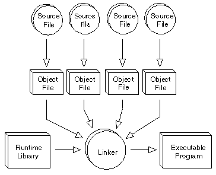
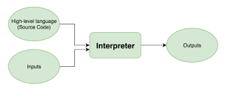

Regardless of what language you use, you eventually need to convert your program into machine language so that the computer can understand it. There are two ways to do this:
| Compile the program | Interpret the program |
|---|---|
|  |  |
| To transform a program written in a high-level programming language from source code into object code. Programmers write programs in a form called source code. Source code must go through several steps before it becomes an executable program. The first step is to pass the source code through a compiler, which translates the high-level language instructionsinto object code. | An interpreter translates high-level instructions into an intermediate form, which it then executes. interpreters are sometimes used during the development of a program, when a programmer wants to add small sections at a time and test them quickly.In addition, interpreters are often used in education because they allow students to program interactively. |